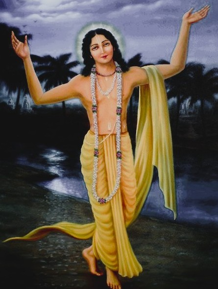

Who Was Chaitanya Mahaprabhu?
Chaitanya Mahaprabhu, born Vishvambhar Mishra and known in his childhood as Nimai, was a Bengali saint, mystic, and philosopher who lived from 1486 to 1533 CE. He is remembered as the founder of Gaudiya Vaishnavism, a devotional tradition centered on the worship of Krishna, and as one of the most influential figures in the later history of the Indian bhakti movement.
Chaitanya is especially associated with a philosophy known as Achintya Bheda Abheda, or "inconceivable oneness and difference," which holds that the individual soul is simultaneously identical with and distinct from God in a manner that ordinary human logic cannot fully resolve or explain away. Rather than siding decisively with either strict non-dualism or strict dualism, this position treats the relationship between the soul and the divine as a mystery to be lived through devotion rather than a puzzle to be solved through argument alone.
Born in the town of Navadvipa in the Bengal region of eastern India, Chaitanya was first celebrated as a brilliant young scholar of Sanskrit grammar and logic before undergoing a profound spiritual transformation that redirected his life entirely toward the ecstatic devotional chanting of Krishna's names. He renounced worldly life while still young, adopted the life of a wandering monk, and became the center of a rapidly growing devotional movement across eastern and northern India.
Because much of what is known about Chaitanya's life comes from devotional biographies composed by his own followers, historians treat the more miraculous episodes of his story with appropriate caution while still recognizing the profound and lasting influence of his teaching. His importance lies in reviving and reshaping congregational devotional practice in a form that reached far beyond the boundaries of scholarly Sanskrit philosophy and continues to shape Vaishnava religious life around the world today.
Chaitanya Mahaprabhu: Quick Facts
- Name — Chaitanya Mahaprabhu (Vishvambhar Mishra, Nimai)
- Period — 1486–1533 CE
- From — Navadvipa, Nadia district, West Bengal, India
- Philosophical period — Medieval Indian bhakti movement
- Associated with — Gaudiya Vaishnavism and Achintya Bheda Abheda
- Known for — Congregational chanting (sankirtan) and prema bhakti, or loving devotion
- Major surviving text — The Shikshashtakam, eight verses attributed directly to him
- Key biography — The Chaitanya Charitamrita of Krishnadasa Kaviraja
- Notable followers — The Six Goswamis of Vrindavan
- Historical importance — Founder of one of the most influential bhakti traditions of medieval India
Chaitanya Mahaprabhu and the Bengal Bhakti Movement

Chaitanya lived during a mature phase of the broader Indian bhakti movement, a devotional current that had already been developing for centuries across many regions of the subcontinent, from the Vaishnava philosophy of Madhvacharya and Ramanuja in the south to the poet-saints of the Haridasa tradition in Karnataka. By the time Chaitanya began his teaching, devotional worship of a personal God had already become a major force in Indian religious life, though it had not yet taken the particular ecstatic and congregational form that Chaitanya would give it in Bengal.
The intellectual environment of Navadvipa, where Chaitanya was raised, was renowned as a center of Sanskrit learning, particularly in logic and grammar, and Chaitanya himself was trained in this rigorous scholastic tradition before his spiritual transformation redirected his energies toward devotional practice. This background gave his later movement an unusual combination of scholarly seriousness and unrestrained emotional devotion that distinguished it from some other contemporary religious currents.
Chaitanya's teaching also emerged during a period of considerable social and religious diversity in Bengal, including significant interaction between Hindu devotional communities and the Islamic administration of the region. His insistence that devotional chanting was open to people of every caste and background, including those excluded from more restrictive Brahmanical ritual practice, resonated strongly within this socially varied environment.
In the tradition associated with Chaitanya, philosophical reflection therefore combined seriously with an intensely practical and public devotional movement, treating congregational chanting in the streets and temples not as a lesser or merely popular practice but as the very highest expression of philosophical and spiritual truth.
Who Was Chaitanya Mahaprabhu and What Did He Do?
According to traditional biographies, Chaitanya was born in Navadvipa, a center of Sanskrit scholarship in the Bengal region, and was given the childhood name Nimai. Accounts describe him as an exceptionally gifted student who quickly mastered Sanskrit grammar and logic and began teaching his own students while still a young man, earning a considerable local reputation as a scholar even before his spiritual transformation.
A pivotal turning point in the traditional account of his life came after a pilgrimage to Gaya, where Chaitanya is said to have received initiation from a wandering ascetic named Ishvara Puri and to have undergone an intense spiritual awakening centered on devotion to Krishna. Following this experience, biographers describe a marked change in his behavior, as he increasingly devoted himself to ecstatic chanting and displayed states of intense religious emotion that drew growing crowds of followers in Navadvipa.
At the age of twenty-four, Chaitanya renounced worldly and family life and accepted sannyasa, formal monastic renunciation, after which he adopted the life of a wandering teacher. He traveled extensively across eastern and southern India, eventually settling for much of his later life in the pilgrimage town of Puri in present-day Odisha, home to the celebrated Jagannath temple.
Chaitanya is also credited with directing several of his close followers to settle in Vrindavan, the region traditionally associated with Krishna's own life, where they became known as the Six Goswamis and undertook the systematic scholarly task of establishing Gaudiya Vaishnava philosophy and practice on firm textual and doctrinal foundations.
What can be established more securely than the more miraculous episodes recorded by devoted biographers is the extraordinary scale of the devotional movement Chaitanya set in motion during his own lifetime and the durable institutional and theological legacy carried forward by his closest followers after his death.
What Did Chaitanya Mahaprabhu Believe?
Chaitanya himself left behind almost no independent philosophical treatise, and the systematic articulation of his philosophy was largely carried out by his closest followers, particularly the Six Goswamis of Vrindavan, working from his teachings, his brief surviving verses, and the traditions preserved by those who had direct contact with him.
At the heart of the philosophy associated with Chaitanya lies the conviction that the individual soul stands in a relationship to God, whom Chaitanya identified above all with Krishna, that is neither simply identical, as strict non-dualist Vedanta had claimed, nor simply and permanently separate, as strict dualist Vedanta had claimed, but both at once in a manner that exceeds ordinary conceptual analysis.
Chaitanya's teaching places overwhelming emphasis on bhakti, and specifically on a particularly intense and emotionally rich form of devotion known as prema bhakti, or loving devotion, which he treated not merely as a path toward liberation but as a goal surpassing liberation itself, since the loving relationship between the devotee and Krishna was understood to be more valuable than the mere cessation of suffering.
Central to Chaitanya's practical teaching was his insistence that this highest devotional path did not depend on caste status, scholarly learning, or ritual qualification, but was available to any person, of any background, through the sincere congregational chanting of Krishna's holy names, a position that gave his movement an unusually broad and socially inclusive character for its time.
Scholars of Indian philosophy continue to debate how much of the fully developed Achintya Bheda Abheda system found in later Gaudiya texts should be attributed to Chaitanya's own direct teaching as opposed to the systematic theological work of his followers, but the tradition itself consistently traces its core philosophical and devotional insight back to Chaitanya.
What Is Achintya Bheda Abheda?
Achintya Bheda Abheda, literally "inconceivable difference and non-difference," is the philosophical position associated with Chaitanya that holds the individual soul to be simultaneously one with and distinct from God, a relationship the tradition explicitly describes as beyond the full grasp of ordinary human reasoning.
This position was developed partly in conscious contrast to the two major existing poles of Vedanta interpretation: the strict non-dualism of Advaita Vedanta associated with Shankaracharya, which held that the soul is ultimately identical with an impersonal Brahman, and the strict dualism of Dvaita Vedanta associated with Madhvacharya, which held that the soul and God remain permanently and entirely separate substances.
Rather than resolving this tension by choosing one side, Gaudiya philosophers following Chaitanya argued that God possesses an inconceivable power, or achintya-shakti, capable of existing as both one with and different from creation simultaneously, much as fire and its power to burn are understood as neither wholly identical nor wholly separate from one another.
This philosophical framework allowed Chaitanya's followers to affirm both the intimate, personal closeness between the devotee and Krishna celebrated in devotional practice and the profound transcendence and majesty of God emphasized in more classical theistic Vedanta, treating both truths as genuinely real rather than requiring one to be sacrificed for the sake of logical consistency.
Later Gaudiya theologians, especially Jiva Goswami among the Six Goswamis of Vrindavan, developed this position into an extensive and carefully argued philosophical system, drawing on scriptural sources including the Bhagavata Purana to defend Achintya Bheda Abheda against objections from rival Vedanta schools.
Sankirtan: Chaitanya Mahaprabhu and Congregational Chanting
Sankirtan, the congregational chanting of the holy names of God, stands as the central devotional practice most closely associated with Chaitanya Mahaprabhu and remains the most publicly visible legacy of the movement he founded.
Traditional accounts describe Chaitanya organizing large groups of devotees to chant and dance together in the streets of Navadvipa, using simple percussion instruments and call-and- response singing to create an intensely emotional, shared devotional experience accessible to people regardless of their level of Sanskrit education or formal religious training.
Central to this practice is the chanting of Krishna's names, most famously in the form of the mantra that would later become closely associated with the wider Gaudiya Vaishnava tradition, understood not merely as a symbolic reference to the divine but as directly and powerfully connected to Krishna's own presence, such that sincere chanting was believed capable of purifying the heart and awakening genuine love for God.
Chaitanya's emphasis on sankirtan reflected his broader conviction that in the current age, formal ritual sacrifice and demanding scholarly study were less effective and less accessible paths to spiritual realization than congregational chanting, a position that gave his movement a distinctly populist and egalitarian character within the wider landscape of medieval Indian religious practice.
This emphasis on collective, participatory devotion, rather than solitary contemplation or private ritual alone, helped Chaitanya's movement spread rapidly and durably, establishing sankirtan as a defining practice of Gaudiya Vaishnavism that continues among Vaishnava communities and their later international offshoots to the present day.
Prema Bhakti: Chaitanya's Vision of Love for Krishna
Chaitanya's philosophy places its greatest emphasis not merely on devotion in a general sense but on prema bhakti, a particularly intense and selfless form of loving devotion that the tradition regards as the highest possible spiritual attainment, surpassing even liberation from the cycle of rebirth.
Within this framework, liberation itself, or moksha, is treated as a comparatively modest goal, since the mere cessation of suffering falls short of the positive, overflowing joy of a genuine loving relationship with Krishna that prema bhakti is understood to offer the sincere devotee.
Gaudiya Vaishnava theology, developing themes closely associated with Chaitanya's own life and emotional example, describes several progressively deeper relationships, or rasas, through which a devotee can relate to Krishna, ranging from reverential awe to the intimate love characteristic of a parent, a friend, or, in its most celebrated form, the passionate devotion associated with Radha.
Chaitanya's own life, as recorded by his biographers, is frequently presented as a living embodiment of this highest form of devotion, with traditional accounts describing him as experiencing overwhelming states of spiritual emotion during chanting, understood by his followers not simply as an emotional display but as direct evidence of the reality and power of prema bhakti that his philosophy sought to describe.
The Shikshashtakam: Chaitanya's Surviving Verses
The Shikshashtakam, meaning "eight instructions" or "eight teachings," is the only work traditionally attributed directly to Chaitanya Mahaprabhu himself, consisting of eight concise Sanskrit verses that summarize the heart of his devotional teaching.
These verses address themes including the transformative power of congregational chanting, the humility appropriate to a sincere devotee, the overwhelming joy that chanting Krishna's names can produce, and the deep longing of separation that a devoted soul may feel in relation to God, presenting a compact but emotionally rich summary of Gaudiya devotional life.
Because Chaitanya himself composed no lengthy philosophical treatise, the Shikshashtakam holds a uniquely important place within Gaudiya Vaishnavism, functioning as the direct textual seed from which later theologians, especially the Six Goswamis of Vrindavan, developed the far more extensive philosophical and scriptural literature of the tradition.
The brevity and intensity of these eight verses illustrate a broader pattern in Chaitanya's own life and teaching, in which direct devotional experience and practice consistently took precedence over extended scholarly exposition, leaving the task of systematic philosophical elaboration to his devoted followers.
The Six Goswamis of Vrindavan and Chaitanya's Philosophical Legacy
The Six Goswamis of Vrindavan, a group of learned followers directed by Chaitanya to settle in the region traditionally associated with Krishna's own life, undertook the essential scholarly work of transforming Chaitanya's devotional example and brief teachings into a fully articulated theological and philosophical system.
Among the most philosophically important of these figures was Jiva Goswami, whose extensive Sanskrit writings provided the most systematic defense of Achintya Bheda Abheda and established much of the scriptural and doctrinal foundation of Gaudiya Vaishnavism as a coherent philosophical school in its own right.
Other prominent figures among the Goswamis, including Rupa Goswami and Sanatana Goswami, contributed important works on devotional practice, aesthetics, and the detailed classification of the different emotional relationships, or rasas, through which a devotee could relate to Krishna, further enriching the philosophical vocabulary of the tradition.
Through the combined efforts of these scholars, Chaitanya's relatively brief and intensely practical devotional teaching was preserved, systematized, and defended against rival philosophical traditions, ensuring that Gaudiya Vaishnavism developed into a durable and intellectually serious school of Indian philosophy rather than remaining a purely localized devotional movement.
Chaitanya Compared with Shankaracharya and Madhvacharya
Chaitanya's Achintya Bheda Abheda is often discussed alongside the two major poles of classical Vedanta philosophy that preceded it, the strict non-dualism of Adi Shankaracharya and the strict dualism of Madhvacharya, since Gaudiya theology positioned itself deliberately between these two positions.
Where Shankaracharya taught that the individual soul is ultimately identical with an impersonal Brahman and that apparent difference is the product of ignorance, Chaitanya's tradition insisted that the personal, relational quality of devotion to Krishna could not be reduced to an ultimately impersonal reality without losing what devotees experience as most essential to spiritual life.
Where Madhvacharya taught that the soul and God remain eternally and entirely separate substances, Chaitanya's tradition affirmed instead a form of real, intimate closeness between the devotee and Krishna that a strictly maintained separation seemed, to Gaudiya theologians, to make more difficult to fully account for.
The distinction matters because it shows how Chaitanya's philosophy did not simply reject earlier Vedanta positions but attempted a further synthesis, treating both unity and difference as genuinely real dimensions of the relationship between the soul and God, held together as an inconceivable but lived spiritual truth rather than resolved through argument alone.
Legends and Traditional Accounts of Chaitanya Mahaprabhu
Traditional hagiographical accounts of Chaitanya's life, most notably the Chaitanya Charitamrita composed by Krishnadasa Kaviraja and the earlier Chaitanya Bhagavata by Vrindavan Das, present him as an extraordinary and even directly divine figure, going well beyond what historians can independently verify.
Within Gaudiya Vaishnava tradition, Chaitanya is regarded as a combined incarnation of Krishna and his most beloved devotee, Radha, appearing together in a single form specifically to experience and demonstrate the height of devotional love while also teaching that love to the world through the practice of sankirtan.
Devotional biographies also record numerous episodes of intense ecstatic experience, miraculous conversions, and displays of spiritual power during Chaitanya's travels and public appearances, presented by his followers as direct confirmation of his identity as a divine incarnation appearing during his particular historical age.
Historians of Indian religion generally treat these accounts as important evidence for how Chaitanya's community understood and venerated him, rather than as verified historical fact, distinguishing the richly devotional portrait preserved in tradition from the more limited details that can be independently corroborated about his actual historical life and travels.
Chaitanya Mahaprabhu: Main Philosophical Ideas
Because Chaitanya's own philosophical output was extremely concise, his central ideas are often summarized under a small number of key headings developed more fully by his followers within the Gaudiya Vaishnava tradition.
Inconceivable Oneness and Difference
Chaitanya's tradition teaches that the soul is simultaneously one with and different from God, a relationship described as Achintya Bheda Abheda, beyond full resolution by ordinary logic.
Prema Bhakti as the Highest Goal
Loving devotion to Krishna, rather than mere liberation from rebirth, is treated as the highest possible spiritual attainment in Chaitanya's philosophy.
Sankirtan as Central Practice
Congregational chanting of Krishna's holy names is presented as the most effective and accessible spiritual practice available to people of every background.
Devotion Beyond Caste and Status
Chaitanya taught that sincere devotional chanting was open to any person regardless of caste, scholarly learning, or ritual qualification.
Devotional Example as Philosophical Method
Chaitanya expressed his philosophy primarily through lived devotional example and a small number of concise verses, leaving systematic theological development to later followers such as the Six Goswamis.
What Do We Actually Know About Chaitanya Mahaprabhu?
Chaitanya is a useful example of the broader challenge facing historians who study medieval Indian saints whose lives are known mainly through devotional biography written by their own ardent followers rather than independent historical documentation.
Relatively Well-Attested
- Chaitanya was born in Navadvipa, in the Bengal region of India, in 1486 CE.
- He became the central figure of a major devotional movement emphasizing congregational chanting.
- He accepted formal monastic renunciation and later settled for much of his life in Puri.
- He directed several close followers to Vrindavan, where they became known as the Six Goswamis.
- The Shikshashtakam remains the primary surviving text attributed directly to him.
Traditionally Reported
- His early scholarly training and reputation in Sanskrit logic and grammar.
- His spiritual initiation and transformation following his pilgrimage to Gaya.
- His identification within Gaudiya tradition as a combined incarnation of Krishna and Radha.
- Various episodes of ecstatic experience recorded in hagiographical texts such as the Chaitanya Charitamrita.
Uncertain or Disputed
- The precise details of specific episodes recorded only in later devotional biographies.
- The extent to which the fully developed Achintya Bheda Abheda system should be attributed to Chaitanya's own direct teaching versus later systematization by the Goswamis.
- The exact circumstances of the end of his life, which traditional accounts describe in ways that are difficult to verify historically.
- Whether all miraculous episodes recorded in devotional literature accurately describe historical events.
Why Is Chaitanya Mahaprabhu Important in Indian Philosophy?
Chaitanya is important because he reshaped devotional practice across a major region of medieval India, giving philosophical and practical form to a synthesis between unity and difference that continues to distinguish Gaudiya Vaishnavism from other schools of Vedanta.
His philosophical legacy raises a fundamental question that remains central to the philosophy of religion: Can the soul's relationship to God be genuinely one of both unity and difference at once, and if so, what kind of spiritual practice does that inconceivable relationship actually call for?
This question has continued to shape devotional and philosophical reflection within Vaishnava traditions, as later thinkers examined how Achintya Bheda Abheda relates to the earlier positions of Advaita and Dvaita Vedanta and to the lived experience of bhakti itself.
Chaitanya's importance therefore does not depend on accepting every legendary episode associated with his biography. His historical significance comes from his place as the inspiration behind one of the most widely practiced devotional traditions in the history of Indian religion, whose influence continued to expand internationally in later centuries through his followers' teaching.
Chaitanya Mahaprabhu Explained Simply
Chaitanya Mahaprabhu was a fifteenth-century Bengali saint who founded Gaudiya Vaishnavism, teaching that the soul is simultaneously one with and different from God, and that congregational chanting of Krishna's names is the most direct path to loving devotion.
Instead of resolving the philosophical debate between unity and difference in favor of one side, Chaitanya's tradition holds that both are inconceivably true at once, expressed through the doctrine of Achintya Bheda Abheda, and lived out through ecstatic, socially inclusive devotional practice rather than resolved through logical argument alone.
His emphasis on sankirtan and prema bhakti remains among the most influential and widely practiced contributions of medieval Indian philosophy to the wider history of devotional religion.
- Philosopher/Saint: Chaitanya Mahaprabhu
- Period: 1486–1533 CE
- Tradition: Gaudiya Vaishnavism
- Major doctrine: Achintya Bheda Abheda
- Central concern: The relationship between the soul and Krishna
- Associated practice: Sankirtan, congregational chanting
- Major surviving text: The Shikshashtakam
- Key followers: The Six Goswamis of Vrindavan
A Principle Central to Chaitanya Mahaprabhu's Teaching
“Chant the holy names and be happy.”
Frequently Asked Questions About Chaitanya Mahaprabhu
Who was Chaitanya Mahaprabhu?
Chaitanya Mahaprabhu was a fifteenth-century Indian saint and philosopher from Bengal who founded Gaudiya Vaishnavism and popularized congregational chanting of Krishna's names as the central path to devotion.
What is Chaitanya Mahaprabhu famous for?
Chaitanya is famous for founding Gaudiya Vaishnavism, teaching the philosophy of Achintya Bheda Abheda, and popularizing sankirtan, the congregational chanting of Krishna's holy names, across medieval India.
What did Chaitanya Mahaprabhu believe?
Chaitanya believed that the individual soul is simultaneously one with and different from God, that Krishna is the supreme form of the divine, and that loving devotion expressed through chanting is the highest path available to devotees of any background.
What is Achintya Bheda Abheda?
Achintya Bheda Abheda, or inconceivable oneness and difference, is the philosophy associated with Chaitanya Mahaprabhu teaching that the individual soul is simultaneously one with and different from God in a manner that ordinary logic cannot fully resolve.
What is sankirtan in Chaitanya's philosophy?
Sankirtan is the congregational chanting of the holy names of Krishna, which Chaitanya Mahaprabhu made the central devotional practice of his movement, teaching that it was open to people of every background regardless of caste or social status.
What is prema bhakti?
Prema bhakti is the intense, selfless form of loving devotion to Krishna that Chaitanya's tradition regards as the highest possible spiritual attainment, surpassing even liberation from the cycle of rebirth.
What is the Shikshashtakam?
The Shikshashtakam is a set of eight Sanskrit verses traditionally attributed directly to Chaitanya Mahaprabhu, summarizing the heart of his devotional teaching and serving as the primary textual seed of later Gaudiya theology.
Who were the Six Goswamis of Vrindavan?
The Six Goswamis of Vrindavan were learned followers directed by Chaitanya to settle in Vrindavan, where they systematically developed the philosophical, scriptural, and theological foundations of Gaudiya Vaishnavism.
How is Chaitanya different from Shankaracharya and Madhvacharya?
Shankaracharya taught strict non-dualism and Madhvacharya taught strict dualism, while Chaitanya's Achintya Bheda Abheda holds that the soul is simultaneously one with and different from God, positioning Gaudiya philosophy between these two earlier Vedanta positions.
Why is Chaitanya Mahaprabhu important today?
Chaitanya remains important because his emphasis on congregational chanting and loving devotion continues to shape Vaishnava religious practice worldwide, including through later international movements that trace their teaching directly back to his example.
Related Indian Philosophers
Chaitanya Mahaprabhu belongs to the wider tradition of Vedanta and bhakti philosophy. Explore philosophers who developed different approaches to the soul's relationship with God.
Philosophy Branches Connected to Chaitanya Mahaprabhu
Chaitanya's philosophical legacy is particularly important for the philosophy of religion, which examines the relationship between the individual soul and the divine, and for metaphysics, where philosophers investigate questions of unity and difference.
Why Chaitanya Mahaprabhu Still Matters
Chaitanya did not leave behind an extended philosophical treatise in the manner of some earlier Vedanta thinkers, yet the devotional movement he set in motion produced one of the most philosophically serious and enduring schools of Vaishnava thought through the work of his closest followers.
Yet the questions associated with Chaitanya remain fundamental to the philosophy of religion: Can unity and difference between the soul and God both be true at once? What role does emotion and love play in genuine spiritual knowledge? Can the highest spiritual truths be lived and sung as fully as they are argued?
The Gaudiya Vaishnava tradition he inspired transformed these questions into a richly developed devotional philosophy. Its emphasis on Achintya Bheda Abheda, prema bhakti, and joyful congregational chanting made Chaitanya Mahaprabhu one of the most influential and enduring figures in the history of Indian religious philosophy.
Explore Great Philosophers